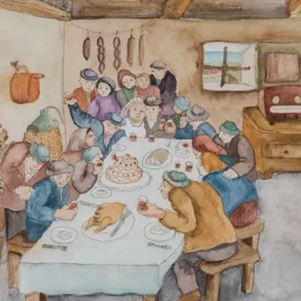

ven 6 nov · dalle 17:00
Mihaela Velikonja (1940–2021): «Immagini pittoresche» - Inaugurazione
A Gorizia una mostra dedicata alla pittrice slovena, tra memoria artistica, identità e salvaguardia del patrimonio culturale A cinque anni dalla scomparsa di Mihaela Velikonja (1940–2021), la Galleria ARS di Gorizia ospita una mostra dedicata alla pittrice slovena, con…
 Indicazioni
Indicazioni
- Costi e prenotazioni
- Costo non indicato · Prenotazione non indicata
- Programma
- Programma da verificare. Apri la fonte ufficiale per orari e possibili aggiornamenti.
- In caso di maltempo
- Nessuna indicazione specifica pubblicata.
- Note
- Acquisito automaticamente dalla fonte.
L’EVENTO
Descrizione completa
A Gorizia una mostra dedicata alla pittrice slovena, tra memoria artistica, identità e salvaguardia del patrimonio culturale
A cinque anni dalla scomparsa di Mihaela Velikonja (1940–2021), la Galleria ARS di Gorizia ospita una mostra dedicata alla pittrice slovena, con l'obiettivo di rendere omaggio alla sua produzione artistica e riportare all'attenzione del pubblico un patrimonio pittorico di particolare valore per la storia culturale del Carso sloveno e del Goriziano.
L'inaugurazione si terrà venerdì 6 novembre 2026, alle ore 17.00 , presso la Galleria ARS, in piazza Vittoria 25 a Gorizia. Nel corso dell'apertura, lo storico dell'arte Saša Quinzi presenterà l'artista e le opere esposte, accompagnando il pubblico alla scoperta del suo percorso creativo e delle peculiarità della sua ricerca pittorica.
Nata a Lokev, Mihaela Velikonja ha saputo trasformare il paesaggio carsico, la natura e la vita quotidiana della sua gente in un universo pittorico ricco di colori, dettagli e suggestioni. Le sue opere raccontano un territorio, i suoi abitanti, le attività agricole, le tradizioni popolari e i rapporti umani, restituendo immagini di un mondo profondamente legato alle proprie radici. La sua formazione artistica si sviluppò attraverso esperienze significative, tra cui la scuola di arte naïf di Hlebine, in Croazia, la collaborazione con August Černigoj e la partecipazione ai corsi di pittura figurativa di Nino Perizi a Trieste e al Circolo degli artisti Milko Bambič. Dal 1973 iniziò a esporre le proprie opere, presentandole in Italia, Austria, nell'ex Jugoslavia e in Australia.
Accanto ai dipinti dedicati al paesaggio e alla vita rurale, la sua produzione comprende anche opere su vetro e acquerelli su tela, testimonianza della varietà delle tecniche e dei linguaggi attraverso cui l'artista ha interpretato il proprio mondo.
La mostra intende far conoscere al pubblico un corpus di opere che finora non è stato presentato nella sua completezza , contribuendo a restituire il giusto riconoscimento a un'artista che, attraverso la propria sensibilità, ha documentato e interpretato un patrimonio paesaggistico, umano e culturale di grande valore.
L'iniziativa non si limita a una celebrazione commemorativa, ma si inserisce in un più ampio percorso di ricerca, valorizzazione e salvaguardia della memoria culturale slovena. Il progetto prevede infatti anche la realizzazione di un catalogo dedicato e l'organizzazione di ulteriori appuntamenti pubblici, con l'intento di approfondire la conoscenza dell'opera di Mihaela Velikonja e favorirne la trasmissione alle nuove generazioni.
In un territorio di confine come quello goriziano, dove le identità culturali si intrecciano e si arricchiscono reciprocamente, riscoprire il lavoro di un'artista slovena significa anche riconoscere il contributo delle donne alla storia dell'arte e alla costruzione del patrimonio culturale condiviso. Le sue tele diventano così preziose testimonianze di un paesaggio, di tradizioni e di uno stile di vita che il tempo sta progressivamente trasformando.
«Immagini pittoresche» è dunque molto più di una mostra: è un invito a riscoprire attraverso l'arte la memoria di un territorio e a preservare un'eredità culturale che appartiene non soltanto alla comunità slovena, ma all'intero patrimonio storico e artistico del Goriziano e del Carso.
La cittadinanza e gli organi di informazione sono cordialmente invitati a partecipare all'inaugurazione.
IL PROGRAMMA
Programma e orari
Appuntamenti raccolti dalle fonti elencate. Dove manca un orario, non è ancora disponibile in questa scheda.
Programma pubblicato
- Dal 2026-11-06 al 2026-11-06
INFORMAZIONI UTILI
Prima di partire
- Controllare la fonte prima di partire.
ORGANIZZAZIONE